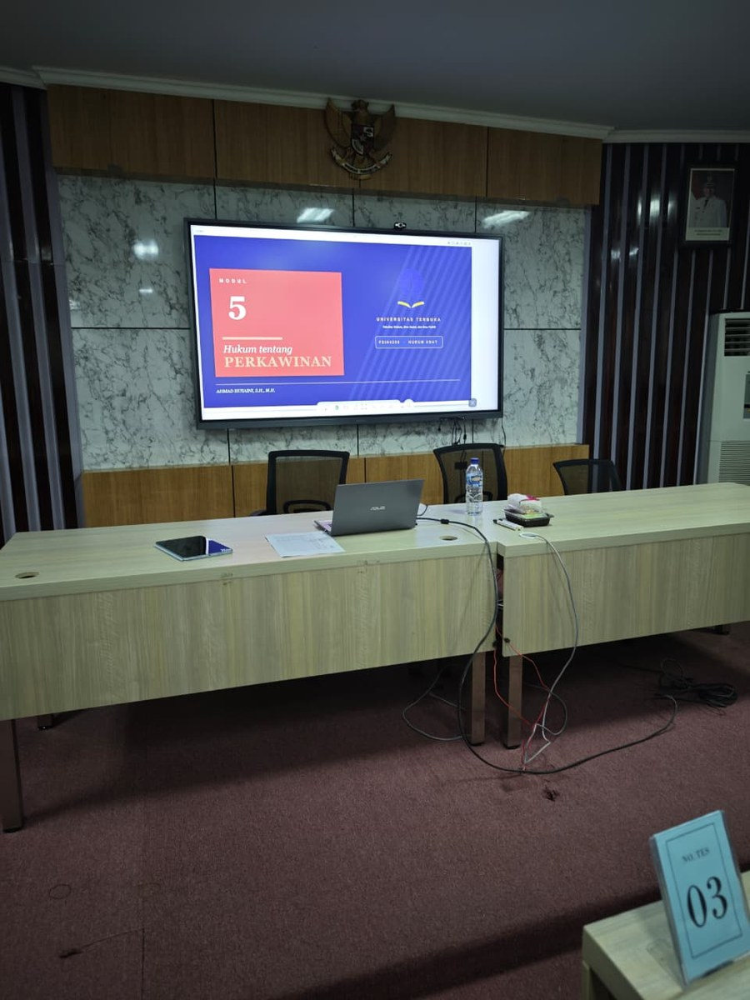

Cara Akses Tutorial Online (Tuton) UT 2026, Panduan Login, Tugas & Strategi Nilai Maksimal
Banyak mahasiswa baru Universitas Terbuka Samarinda bingung saat pertama kali harus mengikuti Tutorial Online (Tuton). Padahal Tuton menyumbang hingga 30% nilai akhir, sangat menentukan kelulusan. Artikel ini membahas langkah lengkap cara akses Tuton, apa saja yang harus dikerjakan, dan strategi agar nilai Tuton Anda maksimal.
Apa Itu Tutorial Online (Tuton)?
Tutorial Online (Tuton) adalah kegiatan belajar online di Universitas Terbuka melalui platform resmi elearning.ut.ac.id. Berbeda dengan kuliah tatap muka biasa, Tuton dilakukan mandiri secara daring: mahasiswa membaca materi, berdiskusi dengan tutor, dan mengerjakan tugas dari mana saja, cocok untuk yang kuliah sambil bekerja. Inilah inti dari semangat #KuliahTerurus #KerjaJalanTerus.


Nilai akhir mata kuliah UT dihitung dari kombinasi Tuton dan Ujian Akhir Semester (UAS). Tuton yang aktif bisa "menyelamatkan" nilai Anda meskipun nilai UAS kurang maksimal.
Cara Akses Tuton UT, Langkah demi Langkah
Jadwal Tuton dalam Satu Semester
Agar tidak ketinggalan, perhatikan pola umum jadwal Tuton UT:
- Minggu 1–2: Inisiasi 1 & 2 dibuka, kenali tutor dan materi
- Minggu 3: Inisiasi 3 + Tugas 1
- Minggu 4: Inisiasi 4
- Minggu 5: Inisiasi 5 + Tugas 2
- Minggu 6: Inisiasi 6
- Minggu 7: Inisiasi 7 + Tugas 3
- Minggu 8: Inisiasi 8, penutupan Tuton
Strategi agar Nilai Tuton Maksimal
- Login sejak minggu pertama, jangan tunggu menjelang ujian
- Baca modul sebelum mengerjakan tugas, jawaban yang berdasar modul dinilai lebih tinggi
- Aktif di forum diskusi, partisipasi ikut menambah nilai
- Kerjakan tugas dengan kalimat sendiri, hindari copy-paste yang terdeteksi plagiarisme
- Simpan bukti pengumpulan, screenshot setiap kali submit tugas
Tuton vs TTM vs Tuweb, Apa Bedanya?
Universitas Terbuka punya beberapa bentuk tutorial. Singkatnya:
- Tuton (Tutorial Online): daring penuh via elearning.ut.ac.id, paling umum
- TTM (Tutorial Tatap Muka): kelas bimbingan langsung, di Salut Etam Betuah tersedia akhir pekan
- Tuweb (Tutorial Webinar): tutorial via video conference (Microsoft Teams)
Untuk hasil terbaik, banyak mahasiswa UT Samarinda mengombinasikan Tuton + TTM di Salut Etam Betuah agar materi lebih mudah dipahami.
Bingung Akses Tuton UT?
Tim Salut Etam Betuah siap bantu dari login elearning, reset password, mengingatkan jadwal tugas, hingga bimbingan materi. Gratis untuk anggota!
💬 Tanya via WhatsApp, Gratis!